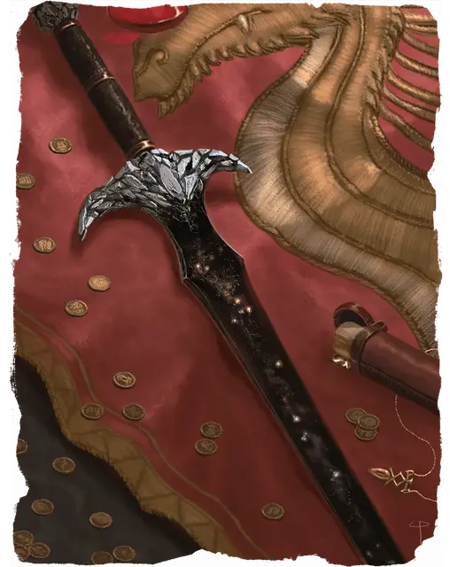

Чёрный клинок
Blackrazor
Оружие (двуручный меч), легендарное (требуется настройка существом с любым мировоззрением, кроме законного)

Рекомендованная стоимость от 50 001 зм
Скрытый в подземельях горы Белый Шлейф, Чёрный клинок сияет как кусочек ночного неба, заполненный звёздами. Его чёрные ножны украшены кусочками обсидиана.
Вы получаете бонус +3 к броскам атаки и урона, совершённым этим оружием. Оно обладает следующими дополнительными свойствами:
Пожирание души. Каждый раз, когда вы опускаете этим мечом хиты существа до 0, он убивает существо и пожирает его душу, если только это не конструкт и не нежить. Существо, чья душа пожрана Чёрным клинком, может вернуться к жизни только посредством заклинания исполнение желаний [wish].
Пожрав душу, Чёрный клинок дарует вам временные хиты, равные максимуму хитов убитого существа. Эти хиты исчезнут через 24 часа. Пока у вас есть эти временные хиты, и вы держите Чёрный клинок в руке, вы совершаете с преимуществом броски атаки, спасброски и проверки характеристик. Если вы попадаете этим оружием по нежити, вы получаете 1к10 урона некротической энергией, а цель восстанавливает 1к10 хитов. Если этот урон опускает ваши хиты до 0, Чёрный клинок пожирает вашу душу.
Охотник на души. Пока вы держите это оружие в руках, вы знаете о присутствии существ с размером не меньше Крохотного в пределах 60 футов от вас, не являющихся конструктами и нежитью. Кроме того, вы не можете быть очарованными и испуганными. Чёрный клинок может один раз в день наложить на вас заклинание ускорение [haste]. Он сам решает, когда это сделать, и сам поддерживает концентрацию.
Разум. Чёрный клинок — разумное хаотично нейтральное оружие с Интеллектом 17, Мудростью 10 и Харизмой 19. Он обладает слухом и тёмным зрением в пределах 120 футов Это оружие может понимать Общий язык, а также говорить и читать на нём и телепатически общаться с владельцем. У него низкий и раскатистый голос. Пока вы настроены на Чёрный клинок, он также понимает все языки, известные вам.
Индивидуальность. Чёрный клинок разговаривает повелительным тоном, словно привыкнув, что ему подчиняются.
Его предназначение в пожирании душ. Ему всё равно чью душу он пожрёт, даже если это будет владелец. Он считает, что все виды материи и энергии происходят от пустоты негативной энергии, и когда-нибудь туда вернутся. Сам же он лишь ускоряет этот процесс.
Несмотря на весь нигилизм, Чёрный клинок чувствует странное родство с Волной [wave] и Сокрушителем [whelm], двумя другими оружиями, хранящимися под горой Белый Шлейф. Он хочет, чтобы эти три оружия были вместе и совместно использовались в сражениях, несмотря на то, что он не согласен с Сокрушителем и считает Волну занудной.
Жажду душ Чёрного клинка нужно постоянно удовлетворять. Если меч в течение трёх дней не пожрёт ничью душу, на следующем закате у него возникает конфликт с владельцем.